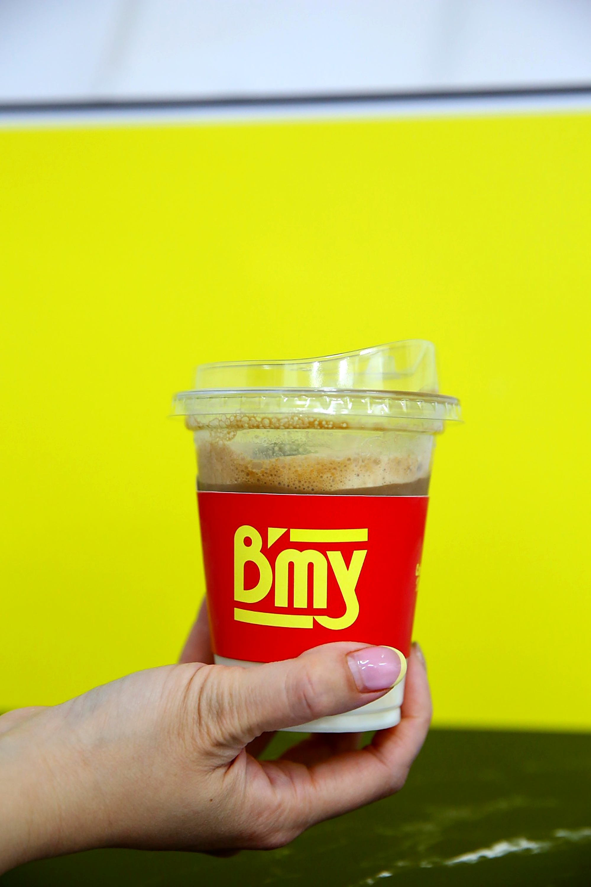
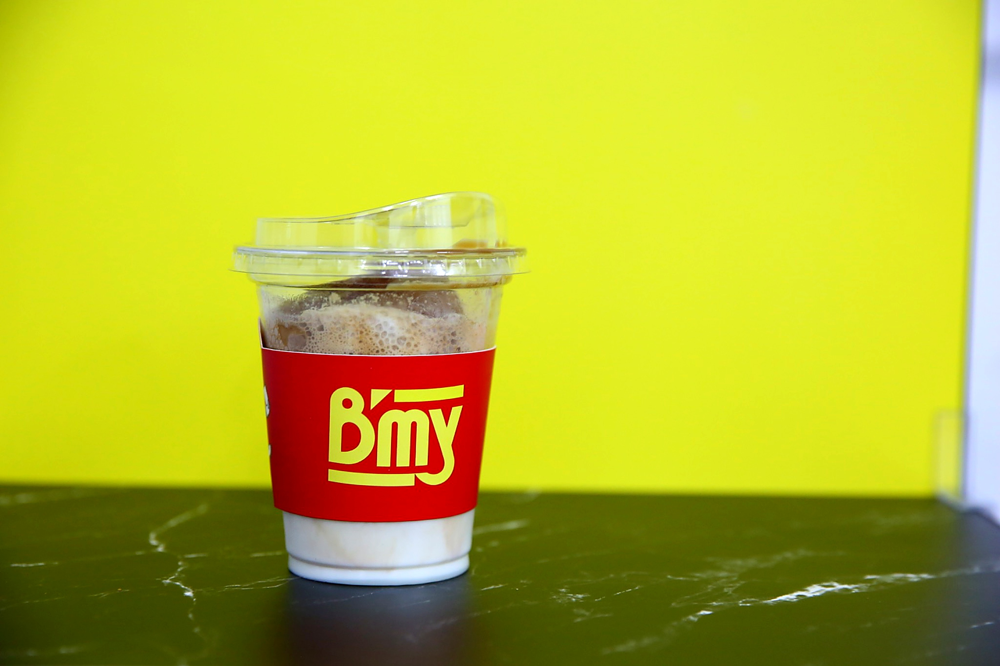

Popular El Asado Crujiente€7,50Cerdo asado crujiente, paté casero, encurtidos frescos, cilantro y guindilla. El clásico de Saigón.
Brocheta al Parilla€7,20Brocheta de cerdo a la parrilla con hierba limón, encurtidos, cilantro y salsa especial B'My.
El Pollo Feliz€6,90Pollo jugoso con especias vietnamitas, mayonesa casera, encurtidos y hierbas frescas.
Top venta Cà Phê Sữa Đá€3,50Café con leche condensada y hielo. Dulce, fuerte, vietnamita 100%.
 Bạc Xỉu€3,50Café suave con más leche condensada. Para los que prefieren el dulce sobre el fuerte.
 Popular
Popular


 Especial
Especial